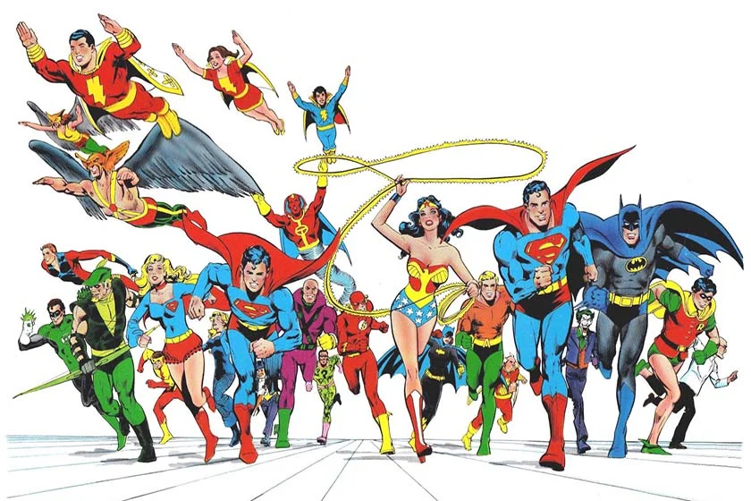

Super-heróis: os 10 personagens mais populares da história
Um super-herói é um personagem modelo fictício "sem precedentes das proezas físicas dedicadas aos atos em prol do interesse público". Protagoniza as histórias de superaventura, ou super-aventura, um gênero de ficção especulativa marcado também pelos super-vilões e pela associação com os quadrinhos estadunidenses, embora esteja presente noutros meios de comunicação por meio de adaptações e obras originais.

Certamente, você simpatiza com alguns super-heróis. Afinal, eles são seres poderosos que tentam salvar a humanidade a todo custo. Suas histórias são empolgantes e lendárias. Desde a criação do primeiro super-herói, em 1938, essa categoria de personagem ganhou muita notoriedade.
Contudo, alguns super-heróis são mais adorados do que outros. Com base em critérios como popularidade e história, selecionamos dos 10 super-heróis mais conhecidos de todos os tempos.
mulher-maravilha
Com a finalidade de ser um símbolo da força feminina, a Mulher Maravilha foi criada em 1941. Seu inventor foi o psicólogo William Moulton Marston. Apesar de que em seus primeiros quadrinhos exista machismo, isso vai mudar quando Gail Simone, Straczynski e Grant Morrison assumirem o roteiro.
Nem sempre Tony Stark teve a fama de bom canalha. No princípio, em 1963, quando Stan Lee e Jack Kirby o criaram, ele era um personagem bidimensional ganhando pouco destaque. Antes de ficar mais conhecido, sua única história relevante foi a do“O Demônio na Garrafa” que falava de seu alcoolismo.
Mas em 2002 veio a repaginação do personagem. Houve uma nova versão dos Vingadores na série de quadrinhos “Os Supremos” que foi escrita por Mark Miller. Ao mesmo tempo, o Homem de Ferro ganhou novos ares, ganhando a fama de o bom canalha.
Um simples garoto é picado por uma aranha e ganha grandes poderes. Essa é uma das histórias mais queridas de super-heróis. Talvez, pelo fato do personagem enfrentar tantos problemas do cotidiano de qualquer mortal.
Criado em 1962, por Stan Lee e Steve Ditko a saga do Peter Parker se mostrou um romance de formação. Ao longo dos quadrinhos, acompanhamos a vida de um adolescente que tem que lidar com as grandes responsabilidades de seus poderes. Contudo, também o vemos sofrer por coisas comuns também, como desamores e morte de pessoas queridas.
O Homem Morcego ou o Cavaleiro das Trevas, vira simplesmente o herdeiro bilionário e recatado Bruce Wayne quando tira a roupa de morcegão. A princípio, o Batman é um justiceiro que não mata ninguém, mas ajuda a salvar a cidade.
A priori, ele é o personagem com maior número de quadrinhos publicados. A maioria escrita por Bob Kane. Sua origem é de 1939. Mas foi Frank Miller o autor de uma das histórias mais conhecidas do Homem Morcego “O Retorno do Cavaleiro das Trevas”.
Hulk é um personagem que tem uma grande carga dramática e psicológica. Portanto, nos quadrinhos como “Planeta Hulk”, “Hulk Contra o Mundo”, “Futuro Imperfeito” e “Hulk Cinza” há uma espécie de o médico-monstro que sofre por ser o que é.
Ainda assim, Hulk é um super-herói muito querido, principalmente pelas crianças. Ele é mais uma criação de Stan Lee juntamente com Jack Kirby. Os dois o inventaram em 1962. Quando ele não é Hulk ele é o doutor David Bruce Banner.
Com toda a certeza, você já viu alguém desfilando por aí com uma blusa estampando o escudo do Capitão América. Apesar de ser bem querido pelo público, o soldado americano enfrenta algumas críticas também. Mesmo que o personagem seja imperialista, capitalista e patriota muitos o criticam pelo seu jeito certinho demais.
Criado em 1940, por Joe Simon e Jack Kirby, a história do Capitão levanta discussões sobre estudos científicos que visam “melhorar” os humanos. Embora tenha sido criado no contexto da Segunda Guerra Mundial, o personagem mantém o mesmo comportamento com valores corretos em todas as eras que o mundo passará.
Stan Lee criou o deus do trovão em 1960. Ele transformou um deus nórdico em um herói da Marvel. As melhores histórias dos quadrinhos foram escritas pelo próprio Stan Lee.
Embora no cinema Chris Hemsworth entregue uma ótima atuação do deus, Tom Hiddleton rouba a cena interpretando Loki, o irmão adotivo de Thor.
Apesar de ser um dos super-heróis mais poderosos, Flash tem poucas histórias em quadrinhos. Ele foi criado em 1940 por Gardner Fox e Harry Lampert. Em suma, ele consegue correr na velocidade da luz e também consegue voltar no tempo e viajar entre dimensões.
Contudo, a DC nunca conseguiu firmar um único ator para interpretar o Flash. Atualmente, ele é interpretado pelo ator Ezra Miller.
O X-Men mais famoso é bem diferente do que conhecemos nas telonas do cinema. Nos quadrinhos, Len Wein e John Romita criara um personagem selvagem, cínico, baixinho e feioso, porque era para ele ser um coadjuvante do Hulk. Mas com a produção dos filmes e com a interpretação de Hugh Jackman, Wolverine se tornou um personagem carismático e popular.
O Super-Homem é um dos heróis mais poderosos dos quadrinhos. Aliás, ele tem poder o suficiente para acabar com a raça humana, mas ao invés de fazer isso, escolheu ser um bom exemplo e tenta ajudar a humanidade.
No entanto, muitos comparam a figura do Homem de Aço, o Último Filho de Krypton, o Homem do Amanhã, o Escoteiro Azul, o Homem que Tudo Tinha, o Super-Homem com a de Deus, Moisés ou Jesus.
Seus criadores foram Jerry Siegel e Joe Shuster que em 1938 deram a luz a esse super-herói. Embora ao longo do tempo ele tenha sofrido várias alterações, o S em seu uniforme continua como sua marca registrada.